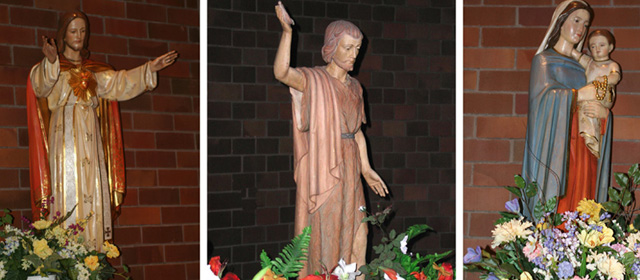

Where All Are Welcome
Call the Parish office : (916) 985-2065
Home
Newcomers
Sacraments
Ministries
Special Events
Contacts & Resources
Parishioners' Access
Sacramental Preparation

Sacraments
Baptism
Reconstruction
Eucharist
Confirmation
RCIA for Children/Teens
Quick Links
Kids - School Aged Children Faith Formation
Children’s Religious Education
Calendar
Catechist Corner
Faith at Home
Registration 2010-11
Sacramental Preparation